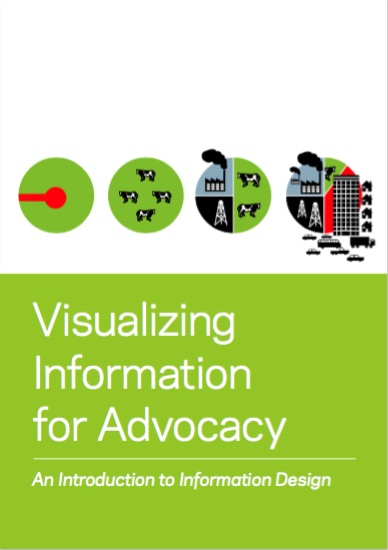

Donnees-a-voir
Data-journalisme et militantisme
Le manuel de sécurité holistique
« Holistic Security » est un manuel de stratégie pour aider les défenseurs des droits de l’homme à maintenir leur bien-être en action. L’approche holistique intègre la santé personnelle, le bien-être, la sécurité digitale et la sécurité de l’information dans une pratique de l’organisation de la sécurité classique.
https://holistic-security.tacticaltech.org

Visualizing information for advocacy
Un livret de présentation des possibilités et méthodes de la visualisation d'informations pour les défenseurs des droits.
Visualizing information for advocacy sur le site du Tmp/Lab ( Choisy-le-Roi ), en format PDF de 6,85 Mo, ou sur le site dédié : https://visualisingadvocacy.org/getbook
https://offshoreleaks.icij.org/pages/howtouse
ICIJ
Fondé en 1997, l’ICIJ ( Consortium International des Journalistes d'Investigation ) est un réseau international de 190 journalistes d’investigation présents dans plus de 65 pays, dont l’objectif est de combattre la corruption, principalement liée à des problématiques transnationales. Avec des révélations concernant le programme d’espionnage américain Echelon, ou l’affaire des Panama Papers, l’ICIJ s’est taillé une certaine notoriété.

Source : How to use the Offshore Leaks database.
Jean-Marc Manach
Jean-Marc Manach est journaliste d’investigation spécialiste d’Internet et des questions de surveillance et de vie privée. Il est surtout connu pour ses interventions online ( notamment sur son blog Bug Brother ) et dans les médias. Il est également co-auteur du documentaire « Une contre-histoire de l’Internet ». Il intervient dans plusieurs écoles de journalisme.
Son blog : http://bugbrother.blog.lemonde.fr/a-propos/
Son compte Twitter : https://twitter.com/manhack?lang=fr